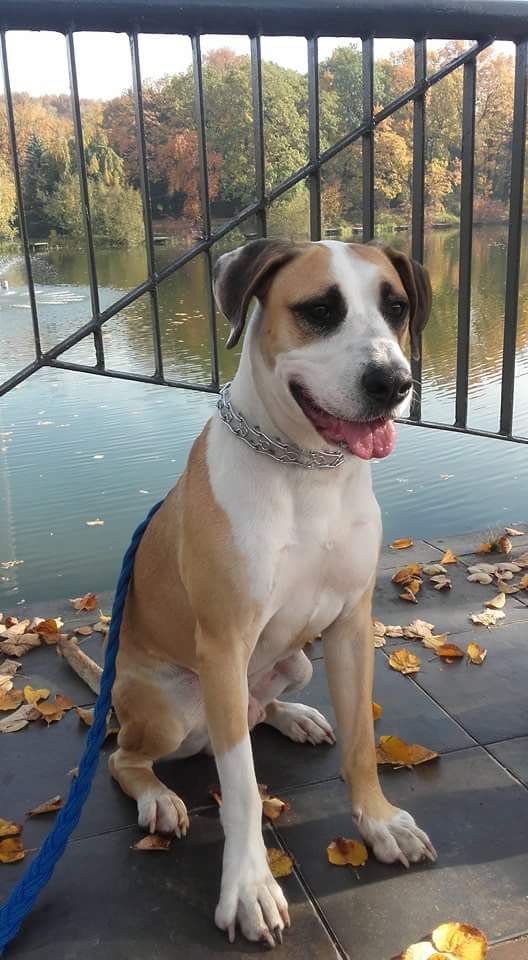

Początek przygody
Jestem adoptowanym psiakiem z Katowickiego schroniska. Miałem ciężkie życie przed zmianą w 2017 roku, kiedy przyjechali po mnie nowi państwo.
Pani bardzo ładnie pachniała, a Pan bardzo obserwował czy jestem grzeczny. Robiłem co mogłem aby się we mnie zakochali.Tak trafiłem do Ciepłego domu, gdzie zawsze mam dobre jedzenie, przytulną budę i dużo miłości. Taki mój PSI raj.
Na tej stronie będę opisywał swoje nieustające przygody :)